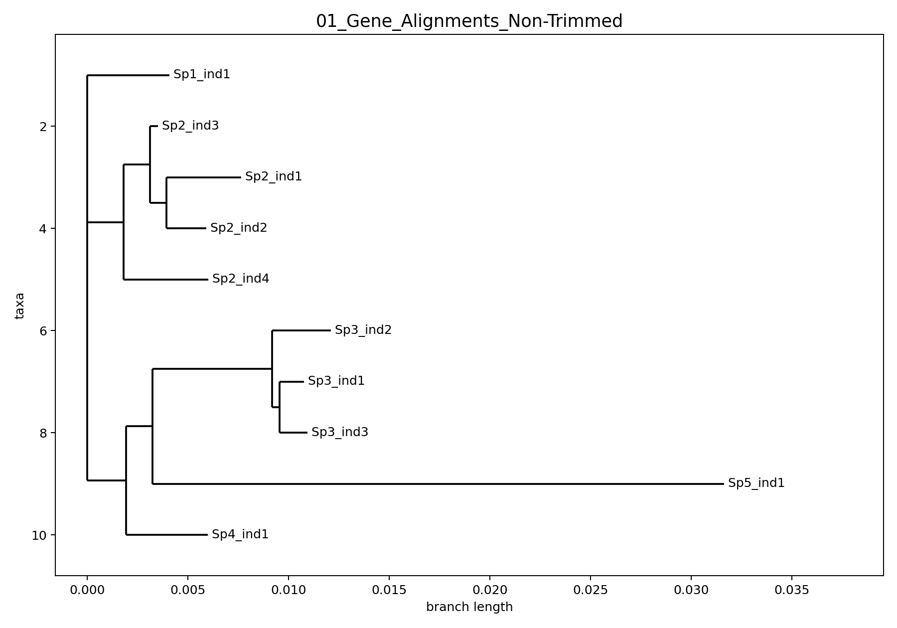
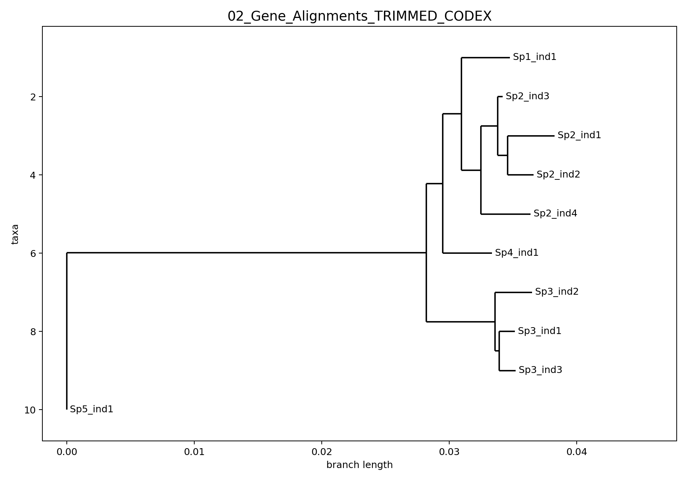
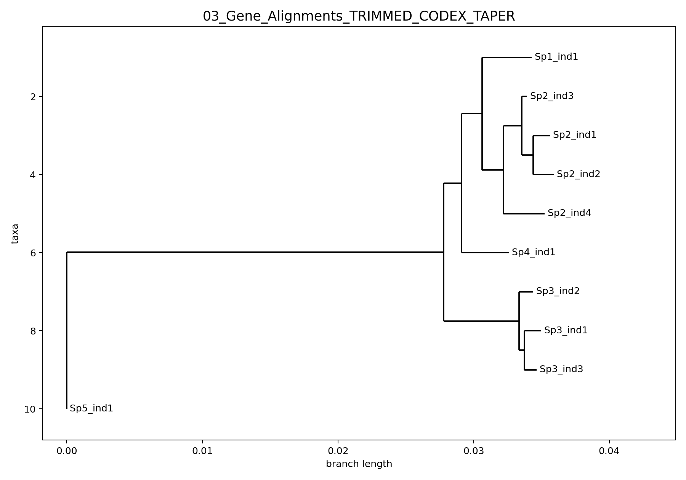
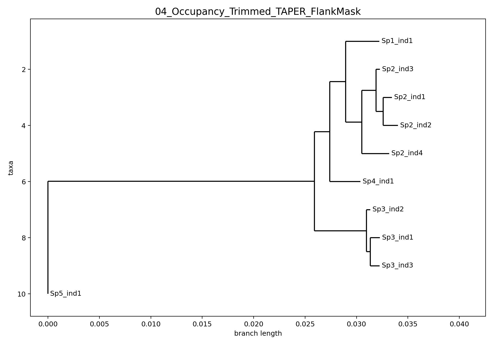

This repository documents a three-step cleanup workflow for shallow genomic alignments:
custom trimming with locus dropping, TAPER masking, and a final custom
flank masker aimed at terminal private mismatches / singleton edge junk.
TAPER at cutoff 1.5 on the retained loci.TAPER output.The repository includes 50 anonymized loci carried across all four stages. The figures below are ML trees from concatenated alignments at each stage.




Step 2 uses TAPER by Zhang et al. Credit and upstream context: Siavash Mirarab's GitHub.
./scripts/run_pipeline_interactive.sh /path/to/repo /path/to/input_alignments
The runner prompts for thresholds instead of silently locking in a single value. Users can choose absolute taxon counts or percentages where that choice matters.